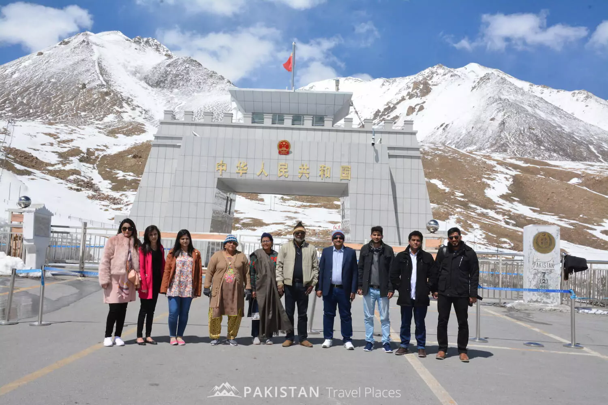

At approximately 4,693 metres above sea level, Khunjerab Pass brings the Karakoram Highway to the border between Pakistan and China. Its high-altitude landscapes, snow-covered peaks, and winding mountain roads make it a striking destination in Gilgit-Baltistan.
Where the highway meets the mountains
Set in the Karakoram Mountains, Khunjerab is one of the world’s highest paved international border crossings. The journey is as much a part of the experience as the pass itself: mountain roads lead through a landscape shaped by altitude, open slopes, and snowy summits.
Landscapes and wildlife
The surrounding Khunjerab National Park provides habitat for wildlife including snow leopards and Himalayan ibex. A visit offers an opportunity to appreciate this mountain environment and photograph its scenery. Wildlife sightings are never guaranteed; keep your distance from animals and leave the landscape undisturbed.
Planning your visit
Heavy snowfall and extreme winter weather can make travel challenging. Before setting out, check current road conditions and visitor access arrangements with local authorities or a knowledgeable local operator. Conditions and arrangements can change; do not assume that access to the pass includes permission to cross the international border.
Prepare for cold, high-altitude conditions and allow time to travel without rushing. Take warm layers, drinking water, and sun protection. If you have concerns about travelling at altitude, seek appropriate medical advice before your journey.